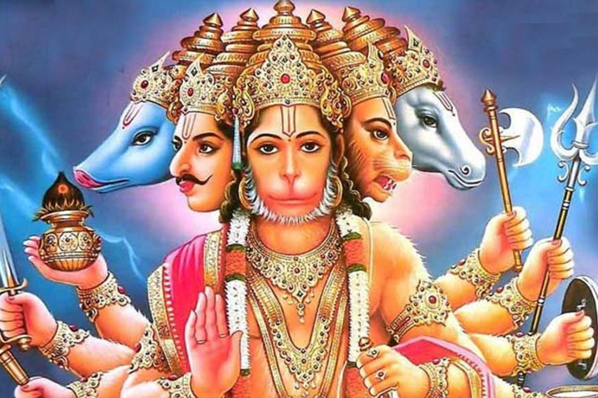

My First Blog Post:- The Story of Hanuman
The Ramayana is one of the most important epic stories from ancient India. It tells the tale of Rama, a legendary prince who must rescue his wife, Sita, who is kidnapped by the demon King Ravana.
Hanuman is a Hindu god whose shape is half-monkey, half-human. He is the most devoted follower of Prince Rama, so he features a lot in the Ramayana as well as lots of other traditional Hindu stories and artworks. Hanuman has special powers and qualities that he uses to help Rama rescue his wife Sita. Because Hanuman uses his powers in the service of others he has come to symbolise the perfect Hindu who has lots of special qualities but is not selfish with them, and uses his abilities to help people.
Here is an image related to Hnuman Ji (Panck Mukhi Hanuman).
Things I Love about Hanuman Ji:
- Devotee of Rama
- Symbolic of Loyalty
- Unparalleled Strength
- Divine Powers
- Spritual Significance
My Second Blog Post:- Favorite Movies
In this blog post, I will be sharing my favorite movies of all time.
Here are some of my top favorite movies:
-
Hollywood Movies
- Marvels All Parts
- DC All Parts
- Harry Poter All Parts
- Pirates of the Caribbean All Parts
-
Bollywood Movies
- Chhichhore
- Hindi Medium
- Lakshya
- Swades
-
Tollywood Movies
- Kantara
- Bahubali All Parts
- RRR
- KGF All Parts
These are just few of my favorites. What are yours?
That's all for this post! Thanks for reading!